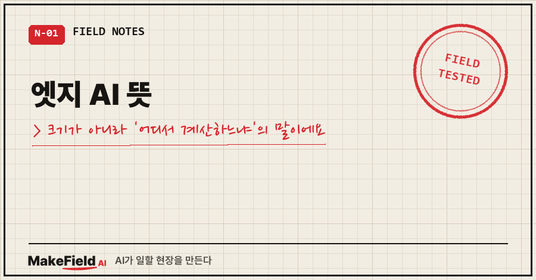
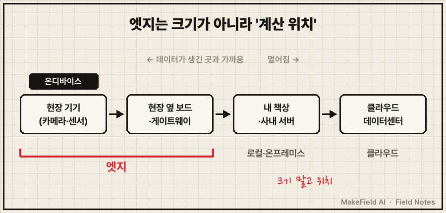
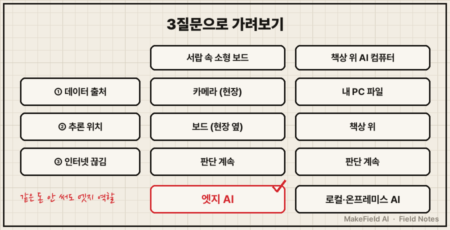

엣지 AI 뜻은 "데이터가 생기는 현장 기기(카메라·센서·기계 옆 보드)에서 AI가 바로 판단하는 방식"이에요. 영상이나 측정값을 먼 클라우드 서버로 보내 답을 받아오는 대신, 그 자리에서 계산을 끝냅니다.
엔비디아는 한 문장으로 이렇게 정의해요. "Edge AI is the deployment of AI applications in devices throughout the physical world."(→ https://blogs.nvidia.com/blog/what-is-edge-ai/) 물리 세계 곳곳의 기기에 AI를 심는다는 뜻이죠.
핵심 사실 하나만 기억하면 됩니다. 엣지는 기기의 크기가 아니라 계산 위치를 가리키는 말이고, 마이크로소프트 문서는 라즈베리파이 3보다 작은 기기부터 산업용 서버까지 엣지 장치로 씁니다(→ https://learn.microsoft.com/en-us/azure/iot-edge/about-iot-edge, 2026-11-19 확인).
1. 엣지 AI 뜻을 찾게 되는 장면
제품 설명의 "Edge AI", 스마트폰 광고의 "온디바이스 AI", 클라우드 문서의 "IoT Edge".
비슷해 보이는데 다 같은 말인지 아무도 안 알려주죠.
저는 AI랑 나눈 대화 정리 메모에서 이 단어를 만났어요.
공장 설비 옆에서 15년을 일한 사람인데도, 그 메모에서 단어가 두 갈래로 갈린 걸 보고 멈칫했습니다. 메모 원문 일부를 그대로 옮깁니다(대괄호 제목만 제가 붙였어요).
[600만 원 데스크탑 쪽]
제조·플랜트의 "클라우드 못 올림" 고객용 온프레미스 데모
[서랍 속 나노 보드 쪽]
나노의 최고 ROI 용도 = 콘텐츠 엔진 + 엣지 데모 자산
(YOLO 감지 → Modbus → PLC)둘 다 "클라우드에 안 올린다"는 점은 같은데, 하나는 '온프레미스', 하나는 '엣지'였어요.
이 차이를 모르면 엣지 AI 뜻을 "작고 싼 AI 기계" 정도로 오해하기 쉽습니다.
2. 비슷한 말 네 개가 헷갈리는 이유
네 단어는 '어디서 AI가 계산하느냐'를 각기 다른 범위로 자른 말이라 겹쳐 보여요. 위치 기준으로 놓으면 정리됩니다.
| 용어 | 계산하는 곳 | 예 |
|---|---|---|
| 온디바이스 AI | 기기 그 자체 안 | 스마트폰, 카메라 내장 칩 |
| 엣지 AI | 데이터가 생기는 현장 근처 (기기 안 + 현장 게이트웨이·서버) | 카메라 옆 소형 보드, 생산라인 옆 서버 |
| 로컬·온프레미스 AI | 내 책상·우리 건물 안 | 사무실 AI 컴퓨터, 사내 서버 |
| 클라우드 AI | 인터넷 너머 데이터센터 | 웹 챗봇, 클라우드 API |
IBM은 엣지 장치 예로 "Industrial IoT machinery, IoT sensors and smart cameras"를 들어요(→ https://www.ibm.com/think/topics/edge-ai). 마이크로소프트 문서는 다른 현장 기기의 데이터를 모아 처리하는 게이트웨이에 AI를 올리는 경우가 많다고 적고요(→ https://learn.microsoft.com/en-us/azure/iot-edge/about-iot-edge).
그래서 경계가 딱 떨어지진 않아요. 책상 위 AI 컴퓨터도 생산라인 옆에서 카메라 데이터를 받으면 엣지 장치가 됩니다.
하나 더 헷갈리는 지점이 있어요. 학습과 추론의 위치가 다릅니다. IBM 설명으로는 모델 학습은 보통 데이터센터나 클라우드에서 하고, 엣지는 학습된 모델로 판단(추론)만 맡아요(→ https://www.ibm.com/think/topics/edge-ai).

그림을 글로 풀면, 데이터가 생긴 곳에서 가까울수록 왼쪽이고, 엣지는 기기 안과 현장 옆 장비까지를 묶는 범위예요.
3. 내 장비가 엣지 AI인지 가려내는 3단계
용어 정의를 외우는 것보다 이 세 질문을 순서대로 던지는 게 빨랐어요.
- 데이터가 어디서 생기나? 카메라·센서·기계라면 현장이다.
- AI 판단(추론)이 어디서 도나? 그 데이터 바로 옆 기기에서 돌면 엣지, 인터넷 너머면 클라우드.
- 인터넷이 끊겨도 판단이 계속되나? 엔비디아는 엣지의 장점으로 "internet access is not required for processing data"를 꼽아요(→ https://blogs.nvidia.com/blog/what-is-edge-ai/). 계속되면 엣지·로컬 쪽이다.
제 장비 두 대에 대 보면 이렇게 갈립니다.
서랍 속 나노 보드 (그날 AI가 정리한 데모 구성)
카메라 영상 → [보드에서 YOLO로 감지] → 신호 → 현장 제어기기
1) 데이터: 카메라(현장) 2) 추론: 보드(현장 옆) 3) 끊겨도: 동작
→ 엣지 AI
600만 원 AI 데스크탑 (장바구니에서 뺀 것)
1) 데이터: 내 PC 파일 2) 추론: 책상 위 3) 끊겨도: 동작
→ 로컬·온프레미스 AI (현장 옆에 두면 엣지로 쓸 수도 있음)
여기서 제 판단이 하나 바뀌었어요.
엣지 데모를 하려고 큰 상자를 살 필요가 없었다는 겁니다. 현장 카메라 옆에서 감지만 하면 되는 역할이면, 이미 서랍에 있던 작은 보드가 정확히 그 자리였어요. 600만 원짜리는 오히려 '클라우드에 못 올리는 곳의 사무실 데모'에 맞는 물건이었고요.
4. 확인하는 방법 — 랜선을 뽑아 보면 됩니다
어떤 제품이나 서비스가 엣지 AI라고 광고할 때 가장 간단한 확인은 네트워크를 끊고 같은 판단이 나오는지 보는 거예요.
- 끊어도 감지·분류 결과가 그대로 나온다 → 추론이 기기 안이나 현장 옆에서 돈다
- 끊자마자 멈추거나 "연결 확인" 메시지가 뜬다 → 판단은 클라우드에서 한다
- 판단은 되는데 결과 기록만 나중에 올라간다 → 엣지에서 판단하고 요약만 클라우드로 보내는 혼합형
마지막 혼합형은 마이크로소프트 문서가 대표 사례로 드는 방식이에요. 원본 데이터를 테라바이트째 보내지 말고 현장에서 정리한 뒤 "only send the insights to the cloud"(→ https://learn.microsoft.com/en-us/azure/iot-edge/about-iot-edge).
솔직히 덧붙이면, 제 나노 보드로 이 테스트를 직접 돌려본 건 아직 아닙니다. 지난 글을 쓸 때까지도 서랍에 그대로 있었거든요.. 여러분이 쓰는 'AI 기능' 중에 랜선 뽑으면 멈추는 건 몇 개나 될까요?
5. 같은 질문, 다른 경우
- 엣지 AI 장비를 사야 하나 고민 중이라면: 600만 원 결제 직전에 멈춘 세 가지 이유와 구매 전 3관문은 로컬 AI 컴퓨터, 600만 원 결제 직전에 멈춘 이유 3가지에 정리했어요.
- 엣지 AI를 돌리는 반도체(NPU) 쪽이 궁금하다면: 엣지 AI 칩이란?에서 칩과 돈의 흐름을 다뤘습니다.
- 내 책상에서 오픈 모델을 실제로 돌린 숫자가 보고 싶다면: MLX GGUF 속도 비교 글이 있어요.
이런 것도 궁금하실 것 같아요
Q. 엣지 AI와 온디바이스 AI는 같은 말인가요?
거의 같이 쓰이지만 범위가 조금 달라요. 온디바이스는 기기 그 자체 안에서 도는 것만, 엣지는 기기 안에 더해 현장 옆 게이트웨이·서버까지 포함해서 씁니다.
Q. 엣지 AI면 클라우드를 아예 안 쓰나요?
아니요. IBM 설명처럼 학습은 보통 클라우드나 데이터센터에서 하고, 엣지는 추론을 맡는 식으로 같이 씁니다. 판단은 현장에서, 요약과 모델 업데이트는 클라우드에서 하는 구성이 흔해요.
서랍 보드를 꺼내 카메라를 붙이는 날, 그 기록은 makefield.ai에 먼저 올리겠습니다.
출처
- NVIDIA Blog, "What Is Edge AI and How Does It Work?"(2022-02-17) — "Edge AI is the deployment of AI applications in devices throughout the physical world.", "internet access is not required for processing data." → https://blogs.nvidia.com/blog/what-is-edge-ai/ (2026-11-19 확인)
- IBM Think, "What is edge AI?" — 엣지 장치 예 "Industrial IoT machinery, IoT sensors and smart cameras", 학습은 중앙 데이터센터·클라우드, 추론은 엣지 → https://www.ibm.com/think/topics/edge-ai (2026-11-19 확인)
- Microsoft Learn, "What is Azure IoT Edge"(ms.date 2026-04-01) — "Use a device smaller than a Raspberry Pi 3 … or use an industrial server", 게이트웨이 배치, "only send the insights to the cloud" → https://learn.microsoft.com/en-us/azure/iot-edge/about-iot-edge (2026-11-19 확인)
- 경험 근거: 부모 글 [로컬 AI 컴퓨터, 600만 원 결제 직전에 멈춘 이유 3가지] 및 그 원석(2026-07-12 대화 정리 메모)
태그: #엣지AI #엣지AI뜻 #온디바이스AI #로컬AI #온프레미스AI #클라우드AI #AI추론 #젯슨나노 #라즈베리파이 #DGXSpark #현장AI #AI용어 #AI오답노트 #현장엔지니어 #MakeFieldAI